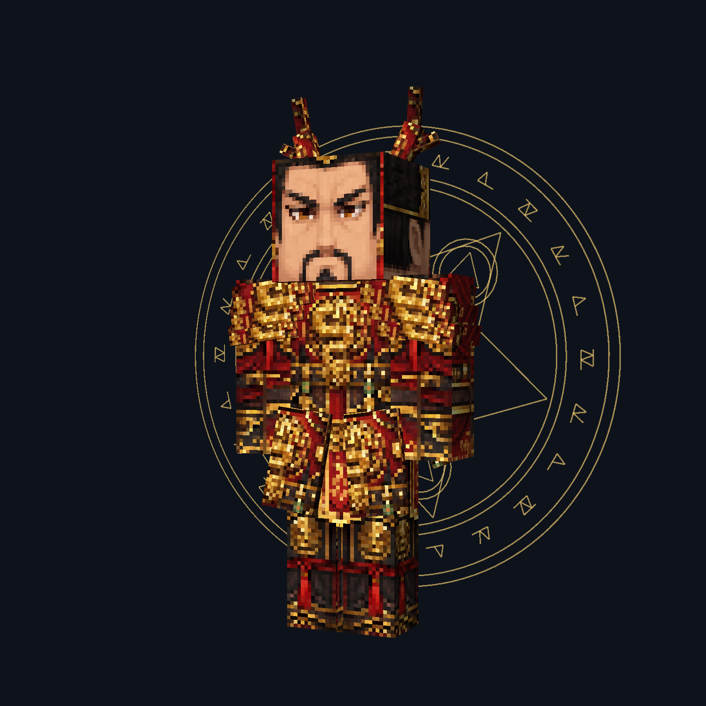
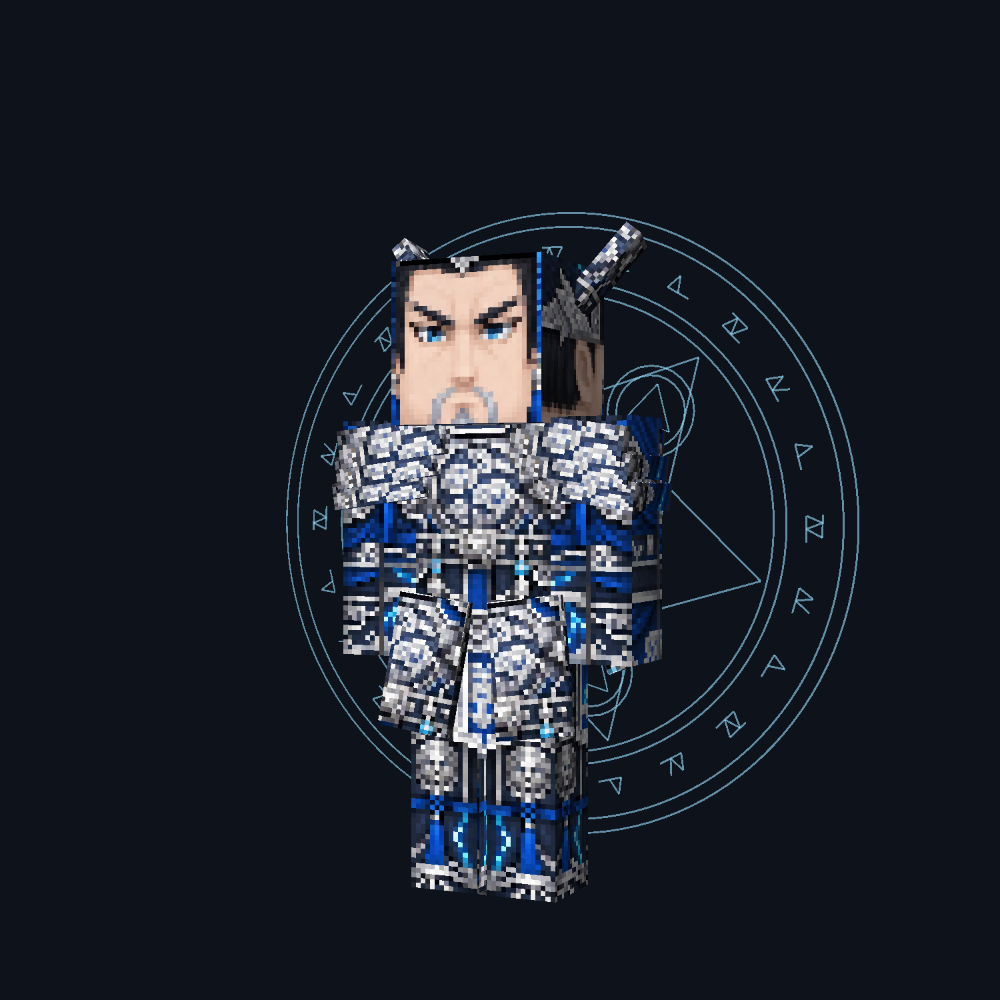
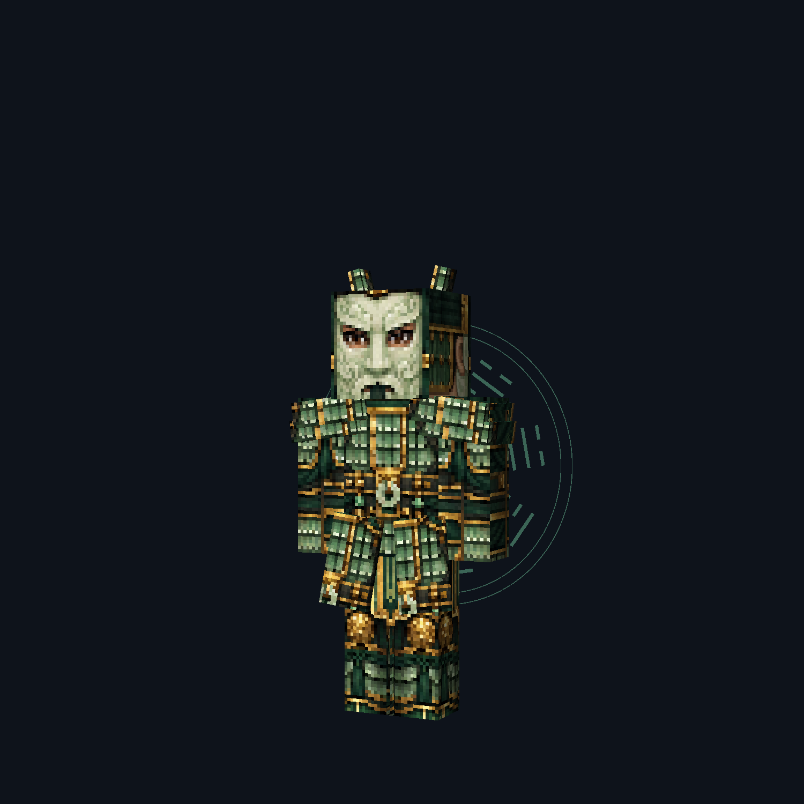
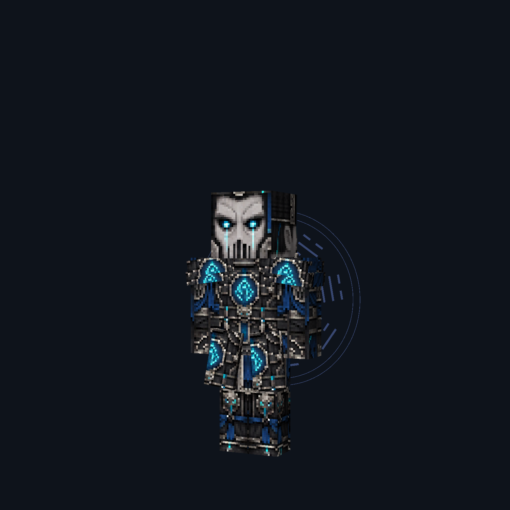
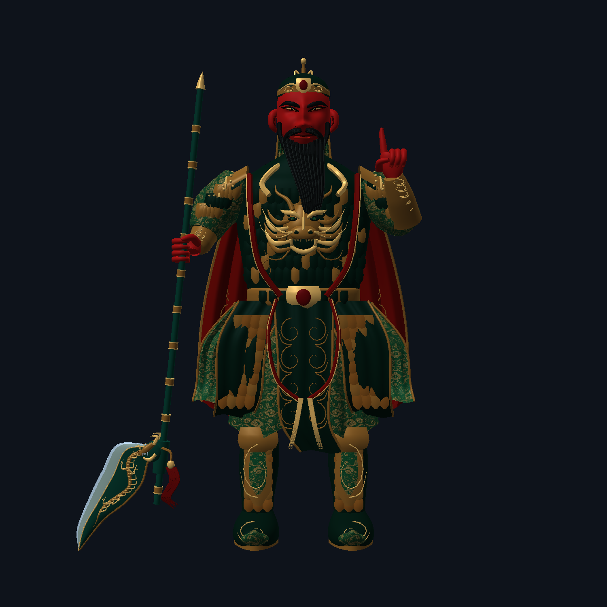

DYNASTY / 2026-09-20
关羽修正 · 四种生物 · 三件饰品
生物与关羽图片来自 Minecraft 客户端实际离屏渲染，使用本轮代码和贴图；不是实战世界截图，也不是 AI 效果概念图。保留原版方块基础，增加独立轮廓部件。
Boss 与小怪

龙帝
赤金龙纹甲 · 分叉冠角 · 三层肩甲 · 金色背阵 · 视觉放大 35%

九霄天将
银蓝天将甲 · 翼冠 · 背旗 · 冰蓝背阵 · 视觉放大 28%

玉甲卫
青玉面甲 · 盔翼与肩甲 · 碧玉背环 · 视觉放大 8%

冥卒
冥铁面罩 · 魂蓝纹饰 · 背旗与护裙 · 蓝紫背环 · 视觉放大 5%
饰品：左旧 / 右新
分别重绘，透明背景。新图 128×128，长边占格约 94%；窄长饰品保持比例，不强行横向拉宽。
关羽持刀：左旧 / 右新
去掉刀头前后多余外露杆段与末端尖头，保留握持段、刀刃、龙口连接与红穗。没有改玩家手里的武器图标。
修改前

修改后

本轮只修改上述生物和饰品；不改变生命值、攻击伤害、碰撞箱，不上传 GitHub。查看更新说明 · 贴图生成记录